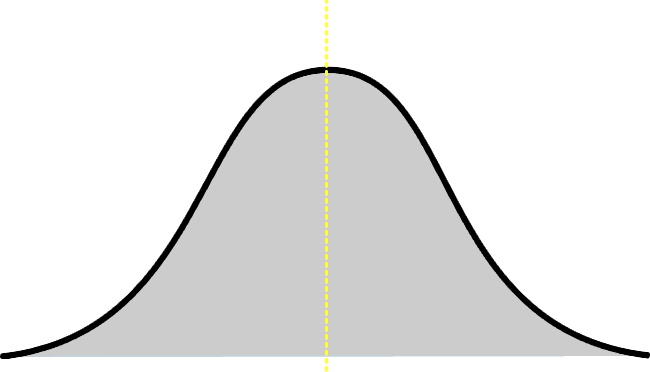
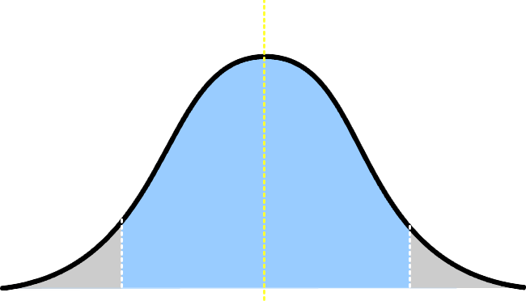
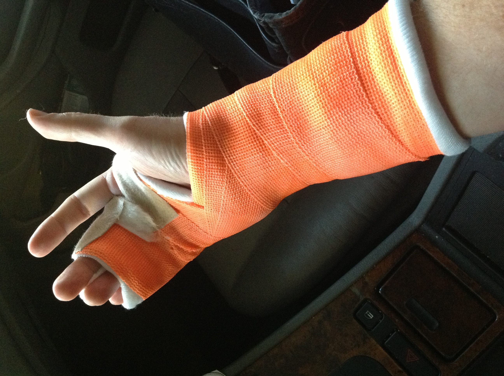

#BADCamp
@WeAreGenuine
Inclusive Design /
Michael Miles
Inclusive Design
2016.badcamp.net/node/176
BADCamp 2016
#BADCamp
Mike Miles
Genuine (wearegenuine.com)
All the internet places: mikemiles86
We all have one thing in common
We want to make a positive impact on as many people as possible
Inclusive Design is...
Planning considerations to ensure that a product, service and/or environment is usable by everyone to the greatest extent possible.
Based on Universal Design
| Ronald L. Mace | Slewyn Goldsmith | Patricia Moore |
Founded and pushed the idea of universal design in the architecture and design of public spaces. Lowering barriers to make those spaces as usable by as many people as possible.
The sloped curb is a result of barrier free/universal desighn. It helps those with accessibility issues, but also beyond. Parents with strollers, delievery people, even people distracted by a text on their cellphone.
Thinking beyond accessibility
Inclusive Design encompasses accessibility issues, as well as, the wider range of human differences.
Inclusive Design
- Location
- Gender
- Language
- Education
- Culture
Accessibility
Vision
Hearing
Cognitive Ability
Mobility
10 Principles of Inclusive Design
|
|
© 05/2011 Sandi Wassmer
Four Pillars of Inclusive Design
- No user is average
- Every user deserves equal access
- Provide understandable content for every user
- Every user deserves our trust and respect
©CC4.0 09/2016 Mike Miles
I. No user is average
In 1952 the Air force had a problem, their new jets were not performing well. The issue? The cockpit was designed for the "average" pilot, for someone who did not exist. It was not until they designed to accomidate the actual differences of pilots did performance improve.
The Myth of Average
"If you design for the average, you are literally designing for nobody."
- Todd Rose
The average user does not exist
Building for the "average user" is the same as building for no user. Every user has a unique difference
Plan beyond the average user
Planning for unique users (outliers) and their differences, means capturing everyone in between.
Create personas with limitations
|  | ||
|
"Suffers from red-green colorblindness" |
"Has a broken wrist due to a skiing accident" |
"Does most work while traveling" |
Map users based on behaviors
- Create an impact map of expected behaviors
© Dominic Krimmer www.dkrimmer.de
Plan out the journey you want users to have. Base it on the real behaviors they will take and how they can reach your intended endpoint.
We believe that no user is average
II. Every user deserves equal access
51% of US internet browsing is from mobile
| mobile | desktop | other |
Data Source: www.slideshare.net/kleinerperkins/internet-trends-v1/14-14Internet_Usage_Engagement_Growth_Solid11
Only a few years ago we were asking clients if they wanted a mobile site. Now we tell them they need a responsive site. The market changed. The same thing is happening for accessibility, we need to tell clients they have to plan this way.
Average global internet speed: 5.6Mbps
|
Republic of Mali |
South Korea |
| 0.5 Mbps | 26.7 Mbps |
Data Source: www.fastmetrics.com/internet-connection-speed-by-country.php
If you just build for South Korea, people in Mali are going to have a poor expirence. However, if you plan and build for people in Mali then everyone is going to have a positive experience.
Structure in a way that makes sense
- Use semantic markup, bit.ly/IDXSemBBC
- Use progressive design to deliver experience
- Prioritize what needs to be loaded
Google does not care about how your website looks. They care about the markup and being able to readers your content in the correct order. As do people with screen readers. If you plan for them, then you plan for better SEO
Artificially limit yourself
- Use tools to throttle connection
- Disable JavaScript
- Can you navigate without a mouse?
We believe that every user deserves equal access
III. Provide understandable content to every user
The new boston.gov website was redesigned and the content was reorganized with real users in mind.
"The website should act like a helpful human. This is one of the big differences between the old site and the new site... on the old site, it would feel like you were interacting with some sort of lawyer-robot that was speaking to you in government-speak"
Jascha Franklin-Hodge, the city’s chief of information technology
Source: The Boston Globe
Be clear and direct
- Use simple phrasing and avoid jargon
- Pay attention to font, spacing, line length
- Be meaningful, tools to check readability
Tools like hemingwayapp.com can help you write clear, direct and meaningful content. A readability score of "Grade 6" means the content is engaging enough for advanced users, but clear and inviting enough for new users.
Inform and guide
- Display useful error messaging
- Plan a user's journey
- Provide contextual relations
The new boston.gov website feature contextually linked sections such as street cleaning and tow lots.
We believe in providing understandable content to every user
IV. Provide every user with trust and respect
Inclusive Design: Excluding no gender
"The easiest way to do inclusive design? Stop asking about gender!"
- Sarah Leren
Drupal.org give users multiple options on how to identify their geneder, or not select an option at all.
Collect only the information you need
- Ask "Why do we need this data?"
- Ask "What options can we give users?"
- Ask "Why should users give this to us?"
Pintrest not only gives users options, but also explains to the user why they collect gender information.
Be responsible with data
- Explain how the data is used
- Explain how the data is protected
- Give users control of their data
We believe in providing every user with trust and respect
Four Pillars of Inclusive Design
- No user is average
- Every user deserves equal access
- Provide understandable content for every user
- Every user deserves our trust and respect
If we agree to these four pillars when building our applications, then we have to think differently.
Four Pillars of Inclusive Design
- No average
- Equal access
- Understandable content
- Trust and respect
We make a positive impact on as many people as possible
And if we follow the four pillars, then we will reach a wider audience.
Resources
|
bit.ly/IDXBad16
This presentation |
bit.ly/IDXBad16Slides
Presentation Slides |
|
bit.ly/IDXPrinciples
10 Principles of Inclusive Design |
bit.ly/IDXAvgMyth The Myth of Average |
|
bit.ly/IDXSemBBC BBC Semantic guidelines |
bit.ly/IDXGender Inclusive Design: Excluding No Gender |
Feedback
@mikemiles86
#BADCamp
I have a podcast!
Explores the non-technical sides of being a developer.
Thank You!
Questions?